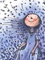
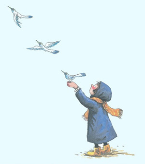

我的日记本
他们彼此深情，是瞬间迸发的热情让他们相遇。这样的确是美丽的，但变幻无常更美丽。 |
介绍
我努力地抓紧世界，最后却仍被世界淘汰，如果一开始就松手，我会不那么伤心吗？
照相本子
关于童年 你记住了什么
两岁时 我拥有一只巨大的粉红猪 它总在我嚎啕大哭时逗我笑
岁时 我骑着小木马一路摇到外婆家 它不喝水也不吃草
四岁时 我离家出走 在公车上睡着了 最后是太空超人送我回家
我真的没骗你 我通通都记得 还有照片为证

地下铁
天使在地下铁入口
跟我说再见的那一年
我渐渐看不见了。
十五岁生日的秋天的早晨，
窗外下着毛毛雨，
我喂好我的猫，
六点零五分，
我走进地下铁
向左走向右走
They're both convinced
That a sudden passion joined them.
Such certainty is beautiful,
But uncertainty is more beautiful still.
|